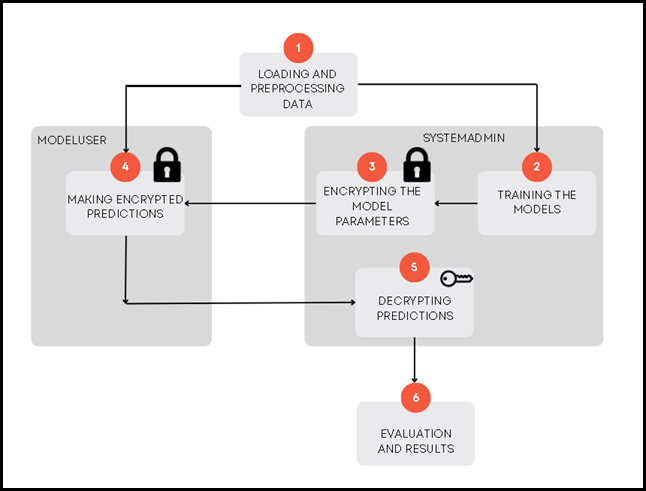

This project examines the performance of machine learning models—specifically Support Vector Machines (SVM), Logistic Regression, and Perceptron—in spam detection for both encrypted and unencrypted data while addressing privacy concerns through the Paillier homomorphic encryption scheme, which enables computations on encrypted data without decryption.

Data wrangling and EDA project of Layoff data in MySql server using techniques like CTEs, string functions, SQL joins etc.

A machine learning project analysing the popular Iris and Wine datasets using techniques such as PCA, regression algorithms, clustering, SVM, and neural networks.

Few of the PowerBI visualization reports analysing Youtube userbase dataset from Kaggle
A Python-based project developing optimization algorithms, implementing Simulated Annealing and Random Search to minimize objective functions while handling constraints. Applied statistical hypothesis testing, including the Mann-Whitney U test, and utilized Python for numerical computation, data visualization, and mathematical modeling.